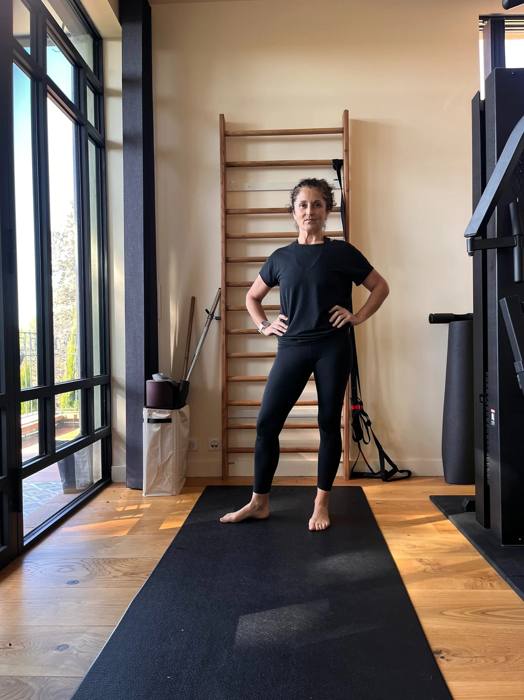

Bougeonsensemble
“M'GYM est un espace de convivialité et de bien-être
où prendre soin de soi est un plaisir.”

Notre histoire
Une association
ancrée dans le village
Depuis les années 80, M'GYM fait bouger Mirepoix-sur-Tarn en plaçant la santé, le bien-être et la convivialité au cœur de ses activités. À ses débuts, l'association proposait des cours de gymnastique d'entretien aux femmes du village. Aujourd'hui, elle accueille toutes celles et tous ceux qui souhaitent pratiquer une activité physique dans une ambiance chaleureuse et motivante.
Rejoindre M'GYM, c'est profiter :
- d'une activité physique bénéfique pour le corps et le mental
- d'un accompagnement professionnel et personnalisé
- de cours accessibles à tous les niveaux
- d'une ambiance conviviale et bienveillante
- d'un véritable lieu de partage et de lien social
Coach sportive diplômée d'État, Emmanuelle Franc vous accompagne avec passion pour vous aider à bouger, progresser et prendre soin de vous, à votre rythme. Chez M'GYM, le bien-être se vit autant dans le mouvement que dans le plaisir de bouger ensemble.
Nos pratiques
Formes & Bien-être
Renforcez votre corps, libérez les tensions et retrouvez une énergie durable. Cliquez sur une étape pour en découvrir tous les bienfaits.

Yin Yoga
Une pratique tout en lenteur
Un véritable moment de déconnexion : des postures douces et profondes, tenues longuement dans une atmosphère calme pour relâcher les tensions, ralentir le rythme et retrouver un profond bien-être.

Yoga
Respiration, souplesse et apaisement
Une pratique ancestrale qui associe respiration, postures et détente pour retrouver équilibre et sérénité. Grâce à des enchaînements adaptés à chacune et chacun, améliorez votre souplesse, votre mobilité et votre posture, tout en apaisant le corps et l'esprit. Chaque séance procure une sensation de bien-être, de légèreté et de détente profonde.

Yogilates & autres méthodes douces
Yoga et pilates réunis
Une pratique complète qui associe Pilates, Yoga et méthodes posturales (De Gasquet, Hypopressif, Mézières). Renforcez les muscles profonds, améliorez votre posture, votre souplesse, votre équilibre et votre mobilité. Chaque séance accorde une place essentielle à la respiration pour favoriser le bien-être, la conscience corporelle et un mouvement plus fluide.

Pilates
Renforcement profond et posture
Le Pilates renforce les muscles profonds, améliore la posture et protège le dos grâce à une respiration maîtrisée. Pratiqué au sol ou avec différents accessoires, il développe force, tonicité, mobilité et équilibre. Chaque séance procure une sensation de gainage, de légèreté et contribue à réduire les tensions du dos et le stress.

Gym Bien-être
Cardio, tonicité et équilibre
Une séance complète et dynamique qui combine cardio ludique, renforcement musculaire, mobilité et étirements. Chaque cours améliore votre condition physique, votre équilibre et votre souplesse, dans une ambiance conviviale. L'objectif : bouger avec plaisir, retrouver de l'énergie et se sentir bien dans son corps.

Forme & Force
Tonification et prévention
Des séances dynamiques mêlant cardio, renforcement musculaire, circuit training, step et boxing. Développez votre force, votre endurance et votre tonicité tout en renforçant les muscles qui protègent les articulations et le dos. Un entraînement complet pour rester en forme durablement et prévenir les douleurs.

Ateliers thématiques
Découvrir, approfondir, perfectionner
Tout au long de la saison, nous vous proposons de découvrir, approfondir ou perfectionner d'autres pratiques : le yoga, le pilates, la prévention des chutes, le yin yoga, les bains sonores, la nutrition et le bien-être, l'auto-massage et bien d'autres thématiques. Suivez notre actualité sur les réseaux et découvrez ici les prochaines dates.
Voir les prochaines dates →
Prestations sur mesure
Pour groupes, entreprises et événements
Que vous soyez une association, un comité d'entreprise, un organisateur d'évènements, un groupe d'amis ou un particulier, nous vous proposons des interventions sur mesure adaptées à vos envies : Yoga, Pilates, marche nordique, massages bien-être.
Découvrir en détail →
Explorez aussi
Marche nordique &
activités outdoor
Respirez, bougez et ressourcez-vous en pleine nature. Nos séances associent marche nordique, cardio, renforcement musculaire, yoga en extérieur, étirements, marche afghane et découverte du patrimoine. Une façon conviviale d'entretenir sa forme tout en profitant des bienfaits du grand air.
Sur mesure
Interventions personnalisées
Que vous soyez une association, un comité d'entreprise, un organisateur d'évènements, un groupe d'amis ou un particulier, nous vous proposons des interventions sur-mesure adaptées à vos envies : yoga, Pilates, marche nordique, massages bien-être.


Votre coach
Emmanuelle
Franc
Avec son énergie, Emmanuelle vous accompagne dans votre pratique avec des conseils personnalisés. M'GYM est un espace de convivialité et de bien-être où prendre soin de soi est un plaisir.
Tarifs
Des formules accessibles
Adhésion association
Obligatoire pour participer aux cours
15€
À la carte
80€
Forfait 10 séances
Valable 3 mois
145€
Forfait 20 séances
Valable 6 mois
10€
À la séance
Sans engagement
Cours collectifs & sorties marche nordique · prêt de bâton compris
À la saison
| Formule | Une personne | Parents & enfants |
|---|---|---|
| Tarif fidélitéRenouvellement d'adhésion | 210€ | 410€ |
| Tarif pleinPremière adhésion | 235€ | 460€ |
Valable une saison, de septembre à juin
150€
Mi-saison
De janvier à juin
75€
Trimestre
D'avril à juin
Besoin d'une formule pour une association, un comité d'entreprise, une collectivité ou un événement ? Découvrez nos tarifs sur mesure.
Envie de nous rejoindre ?
Remplissez le formulaire d'inscription en ligne, il ne prend que quelques minutes.
- Vos coordonnées
- L'activité qui vous intéresse
- La formule tarifaire choisie
- Votre historique personnel
Horaires des cours
Notre Planning
Retrouvez ci-dessous l'ensemble des créneaux de la saison. Pour toute question sur un cours en particulier, l'équipe M'GYM se tient à votre disposition.
Saison 2025 — 2026
| Moment de la journée | Lundi | Mardi | Mercredi | Jeudi |
|---|---|---|---|---|
| Matin | Gym Bien-être09h30 | Gym Bien-être09h30 | ||
| Midi | Yogilate12h30 | Pilates12h30 | ||
| Soir | Yoga postural18h00 Pilates19h15 | Pilates Ball18h00 Cardio Training19h00 | Cardio Pilates19h00 Yin Yoga19h45 |
Suivez-nous
Nos Réseaux
Nous trouver
Contacts & Accès
31340 Mirepoix-sur-Tarn
Première séance d'essai ou inscription directe —
Emmanuelle vous accueille avec plaisir.